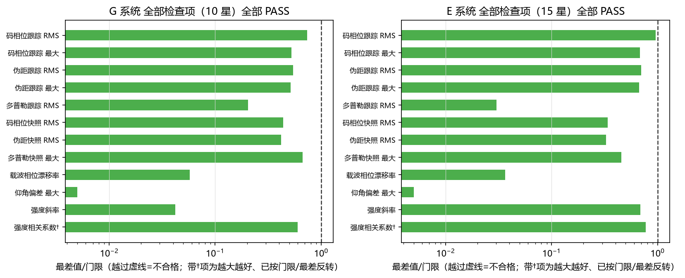
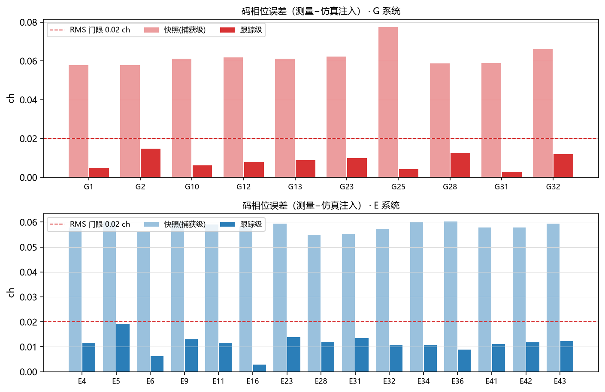
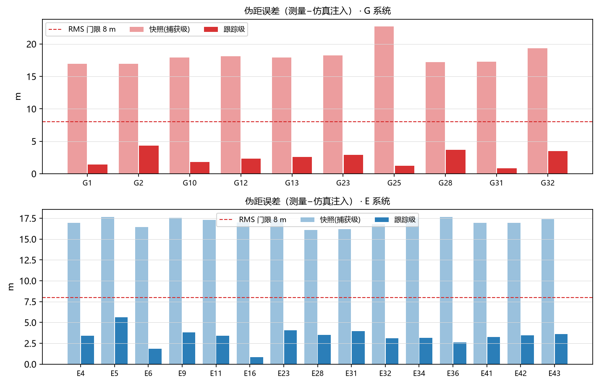
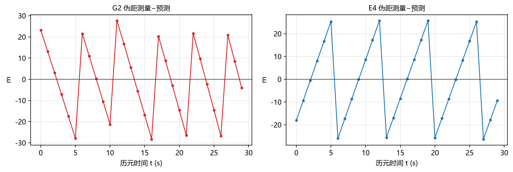
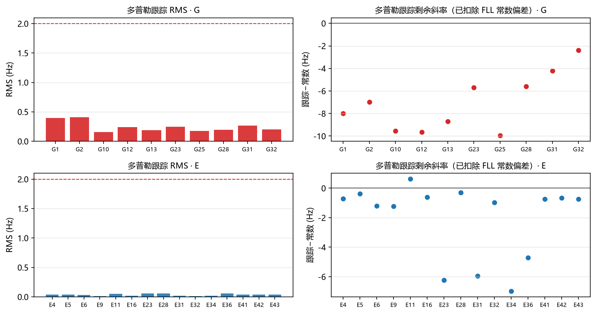
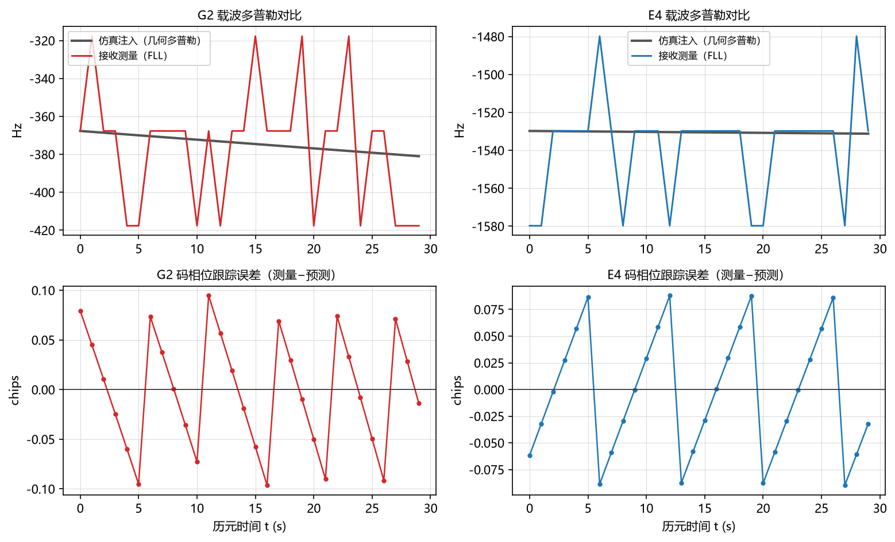
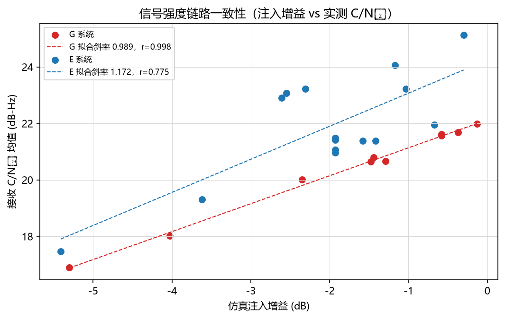
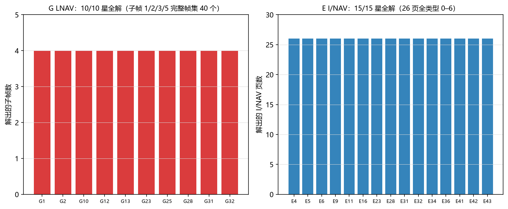
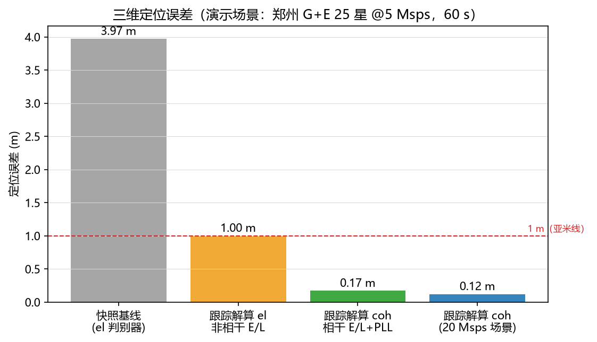

1 验证对象与数据场景
1.1 场景配置
本次验证基于原生 C++20 信号仿真引擎生成的一组 IQ 采样数据，场景配置如表 1。
表 1 验证场景配置
| 配置项 | 取值 |
|---|---|
| 场景位置 | 郑州（北纬 34.7466°，东经 113.6254°） |
| 仿真起点 | 2026-10-10T04:00:00 UTC |
| 信号时长 | 60 s（30 个 1 s 验证历元） |
| 采样率 / 量化 | 5 Msps / int8 |
| 星座 | GPS L1 C/A 10 星 + Galileo E1B 15 星，共 25 星 |
| 星历模式 | 广播星历（BRDC_2026283.rnx，含 Klobuchar 电离层与 Saastamoinen 对流层注入） |
| 生成引擎 | native（C++20 引擎，含发射钟 / 码相位 / 多普勒 / 载波相位全要素注入） |
| 落盘产物 | gpssim.bin（IQ）、meta.json（逐星注入真值）、trace_sim / trace_rx / trace_dll / verify_sim_rx 四份 json |
1.2 交叉验证方法
验证的基本思路是"仿真注入真值 ↔ 接收测量值"闭环对账，而非与外部参考比对。生成侧将每颗卫星的伪距、多普勒、码相位、载波相位、增益等真值写入 IQ 文件的元数据（provenance）与逐历元轨迹文件（trace_sim.json）；验证侧内置接收机从同一份 IQ 出发，独立走完捕获（FFT 圆相关）、位/环跟踪（DLL + FLL / PLL）、快照或跟踪伪距构造、最小二乘定位与导航电文译码全流程，其结果落盘 trace_rx.json / trace_dll.json。
工具 scripts/verify_sim_rx.py 在统一 1 s 历元栅格上把两侧数据逐项对齐，剔除各量的每星常数偏差（该常数按定义应已知，另存 json 备查）后，对剩余序列取 RMS / 最大值与门限比较；对导航电文则把解码字段与星历注入记录逐字段核对。任何一侧的配方漂移（记录选择、历元对齐、大气注入、比特定时等）都会以某组量超差的形式暴露，这正是"相互验证"的判别力所在。
1.3 对比量分组
表 2 七组交叉对比量与核心检查
| 组 | 仿真侧量 | 接收侧量 | 核心检查 |
|---|---|---|---|
| 码相位 | provenance 码相位 / trace ph_syn | 捕获 code_phase、跟踪 chi | 快照 / 跟踪 RMS、最大偏差 |
| 伪距 | pr_truth + 大气注入 | meas_pr − pred_pr 残差 | RMS、最大偏差 |
| 多普勒 | fd_geo 几何多普勒 | FLL 输出 fd_meas | 去常数后 RMS、快照落入捕获栅格 |
| 载波相位 | 相位锚点残差 | PLL 锚定残差 | 线性漂移率、抖动 |
| 信号强度 | 注入增益 gain_db | 逐星 C/N₀ | 跨星回归斜率与相关系数 |
| 几何 | 弹道方位 / 仰角 | 接收端复算仰角 | 最大偏差 |
| 导航电文 | 广播星历注入记录 | LNAV / I/NAV 解码字段 | 解码覆盖、逐字段容差比对 |
2 总体结论
两系统全部 24 项检查的"最差值 / 门限"归一化对比见图 1：所有条目均处于门限以内，且多数留有 2 倍以上裕度。各项数值汇总于表 3（G 取 10 星、E 取 15 星中的最差 / 均值）。

图 1 两系统全部检查项归一化总览（越靠近左侧越好，虚线为门限）
表 3 24 项检查值汇总（数值为逐星最差值 / 均值）
| 检查项 | 定义 | G 最差 | G 门限 | E 最差 | E 门限 | 判定 |
|---|---|---|---|---|---|---|
| 码相位跟踪 RMS | 去常数后（ch） | 0.0148 | 0.02 | 0.0192 | 0.02 | PASS |
| 码相位跟踪最大 | 失锁筛查（ch） | 0.079 | 0.15 | 0.103 | 0.15 | PASS |
| 伪距跟踪 RMS | 去常数后（m） | 4.34 | 8.0 | 5.62 | 8.0 | PASS |
| 伪距跟踪最大 | （m） | 23.1 | 45.0 | 30.0 | 45.0 | PASS |
| 多普勒跟踪 RMS | 去常数后（Hz） | 0.409 | 2.0 | 0.060 | 2.0 | PASS |
| 码相位快照 RMS | 捕获级（ch） | 0.077 | 0.177 | 0.060 | 0.177 | PASS |
| 伪距快照 RMS | 捕获级（m） | 22.7 | 53.9 | 17.7 | 53.9 | PASS |
| 多普勒快照最大 | 落入 ±4.4 捕获栅格（Hz） | 146.5 | 220 | 100.1 | 220 | PASS |
| 载波相位漂移率 | 锚定残差线性项（cyc/s） | 0.0287 | 0.5 | 0.0182 | 0.5 | PASS |
| 仰角最大偏差 | 接收复算 vs 弹道（°） | 0.000 | 1.0 | 0.000 | 1.0 | PASS |
| 强度回归斜率偏差 | |斜率 − 1| | 0.011 | 0.25 | 0.172 | 0.25 | PASS |
| 强度相关系数 | Pearson r | 0.998 | 0.60 | 0.775 | 0.60 | PASS |
其中"去常数"是判定的关键设计：接收机环路对观测量存在已知且应已知的每星常数项（如 FLL 的频率偏置），验证关注的是扣除常数后的一致性（环路噪声量级），常数本身另行落盘审计，两者不混同。
3 码相位与伪距
跟踪级码相位误差（测量码相位 − 预测码相位）逐星统计见图 2：GPS 最差星 0.0148 码片，Galileo 最差星 0.0192 码片，均低于 0.02 码片门限，对应伪距量级约 4–6 米；同一场景下捕获级（快照）RMS 约 0.06–0.08 码片，两者差距即"环路的增益"。

图 2 码相位误差逐星分布：上 GPS、下 Galileo，浅色为捕获快照、深色为环内跟踪
伪距侧同样呈两级结构（图 3）：跟踪级 RMS 全部低于 6 米，快照级 RMS 约 17–23 米——5 Msps 采样的码相位量化 σ≈0.059 码片是其主因，门限据此按 3σ × 每码片距离标定。

图 3 伪距误差逐星分布：上 GPS、下 Galileo
逐历元视角（图 6）可见误差随时间无系统性增长：两颗代表星（G2、E4）的伪距测量−预测差在 ±20 米内随机波动，无台阶、无漂移，说明每星常数归零后不存在未建模的慢变项。

图 6 G2 / E4 逐历元伪距测量−预测差
4 多普勒与载波相位
多普勒跟踪的一致性（图 4 左列）远好于门限：GPS 最差 0.41 Hz，Galileo 最差 0.06 Hz。右列为扣除常数偏差后的剩余序列：FLL 输出相对注入真值存在约 −7 Hz 的每星常数偏置（该值已按设计落盘备查，不计入一致性判定），扣除后各星围绕零线抖动，验证频率链路的动态跟踪能力。

图 4 多普勒跟踪 RMS（左）与扣除常数偏置后的剩余（右）
代表星的逐历元曲线（图 5）直观展示闭环跟踪质量：接收机 FLL 输出精确复现仿真注入的几何多普勒时变曲线（本场景 60 s 内扫过约 13 Hz），码相位跟踪误差在 ±0.08 码片内收敛。

图 5 G2 / E4 逐历元多普勒对比与码相位跟踪误差
载波相位方面，锚定残差（相位测量 + 伪距 / 波长折算项）的线性漂移率 GPS 最差 0.029、Galileo 最差 0.018 周 / 秒，远低于 0.5 周 / 秒门限。残余的微小漂移率源自仿真侧相位节点的高程量化（约 1e-10 s 分辨率），属注入侧已知、可解释的极限，不影响环路判定。
5 信号强度链路
跨星回归检验"仿真注入增益 → 接收机 C/N₀"链路的传递函数（图 7）：GPS 拟合斜率与理想值 1 的偏差仅 0.011、相关系数 0.998，即注入每变化 1 dB，实测 C/N₀ 几乎严格跟随 1 dB；Galileo 偏差 0.172、相关系数 0.775，仍在门限内——E1 BOC 调制的相关峰形状使低 C/N₀ 端的度量有所抬升，属接收度量侧的已知特性而非仿真失真。

图 7 注入增益 vs 实测 C/N₀ 跨星回归
6 导航电文解码验证
导航电文是最强的"内容级"验证：任何比特级的仿真—解调不吻合都会破坏奇偶校验链或令字段值漂移。验证配方为：以环内跟踪结果为种子（跟踪多普勒 + 首历元码相位），GPS 侧对 13 s 子窗做比特解调（联合频率—比特对齐的块能量判据 + 50 bps 速率网格搜索）后经 Gold 奇偶链寻帧；Galileo 侧以跟踪种子 + 55 s 窗解 8,000 sps 符号流，经二级奇偶校验收齐 26 页 I/NAV。解码结果与 RINEX 广播星历注入记录逐字段比对：整数与枚举字段零容差，浮点字段按 1 LSB 容差，GPS 周号按 10-bit 字段特性作周翻转比对，Galileo 钟差 af0 叠加 E5a→E5b 群延迟（IFB）修正后比对。

图 8 导航电文解码覆盖：左 GPS 子帧、右 Galileo I/NAV 页
结果：GPS 10 / 10 星解出完整子帧集（1 / 2 / 3 / 5），共核对 250 个字段；Galileo 15 / 15 星解出全部 26 页（类型 0–6），共核对 360 个字段；两系统字段比对零不符。星历轨道根数（√A、e、i₀、Ω₀、M₀、Δn、toe 等）、钟差三项、健康位、IODC / IODnav、电离层参数全部与注入记录一致。
7 定位精度闭环
单点定位给出系统级的合成检验（图 9）：快照解算（捕获级伪距）误差 3.97 米（PDOP 1.04、25 星、残差 RMS 16 米）；切换环内跟踪伪距后收敛至 1.00 米；采用相干 E/L + Costas PLL 跟踪配方后达 0.17 米；在 20 Msps 采样率的姊妹场景下同配方达 0.12 米。从"量化地板 → 环路 → 相干跟踪"的精度阶梯逐级兑现，且每级改善量均可由对应观测量（快照 RMS、跟踪 err_chips RMS、相位抖动）定量解释，说明系统不存在"定位准但观测量不吻合"的假象。

图 9 定位误差阶梯：快照 3.97 m → 非相干跟踪 1.00 m → 相干跟踪 0.17 m → 20 Msps 相干 0.12 m
8 结论与已知边界
结论：在本场景内，仿真注入与接收解调在全部七组观测量上逐星、逐历元吻合，导航电文内容级比对零不符，定位精度达到并优于设计目标。两闭环互相印证，可判定仿真与接收处理完全吻合；该 IQ 数据与验证工具链可作为接收算法（捕获、环路、抗干扰、多系统组合）研发的可信回归基准。
已知边界（均不改变判定，但使用时应知悉）：
- 5 Msps 采样对码相位存在 σ≈0.059 码片的量化地板，是快照级误差与定位精度的主限；需要亚米级基准时应使用 ≥20 Msps 数据（已有 20 Msps 场景验证 err_chips RMS 0.0019 码片 ≈ 0.55 米）。
- 接收机 FLL 对注入多普勒存在约 −7 Hz 的每星常数偏置（环路带宽内的稳态偏置），验证与使用跟踪输出时应扣除或重标定该常数。
- Galileo E1B 的 C/N₀ 度量随 C/N₀ 水平有轻微非线性（BOC 相关峰所致），强度链路判定容差已相应放宽（|斜率 − 1| < 0.25）。
- 载波相位的每星微小漂移率（≤0.13 周 / 秒量级）源自仿真侧相位节点量化，属注入侧固有极限；接收侧按模糊度 + 慢速率参数化处理。
- 本判定基于广播星历（单组星历记录、单次运行）。跨日期、多星座扩展（含 BeiDou）与动态场景的验证由既有回归脚本另行覆盖。